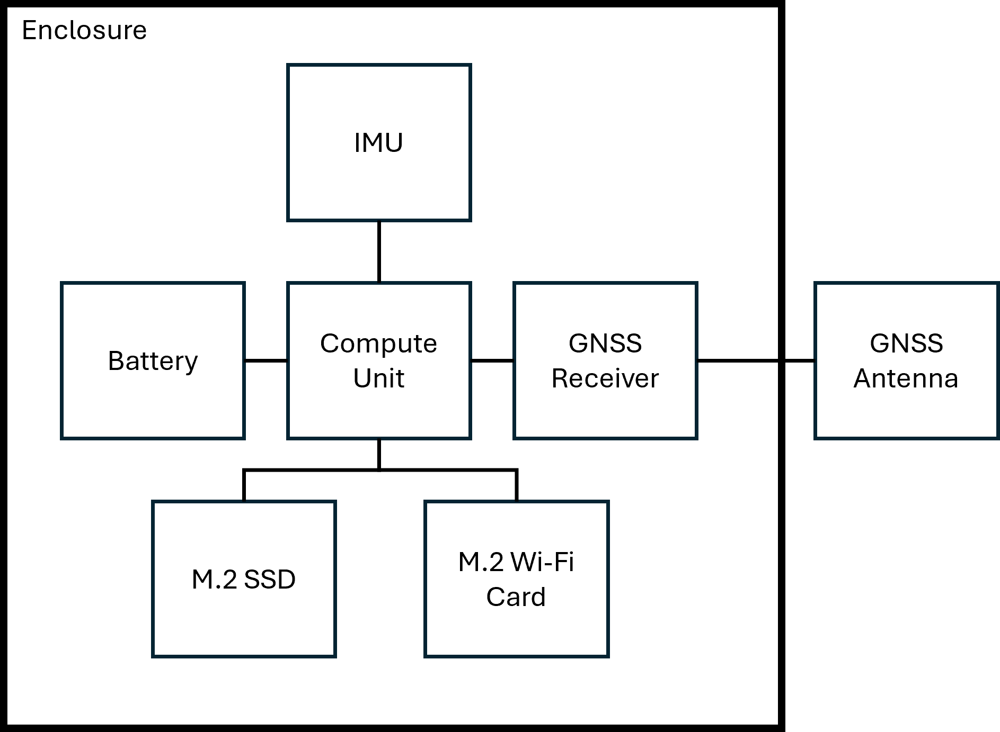
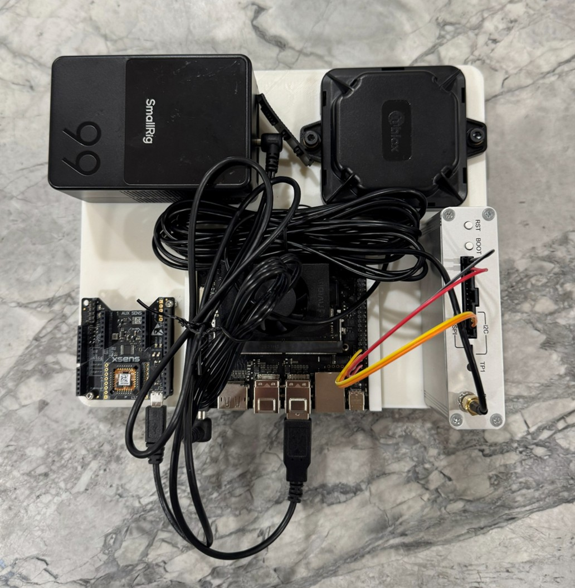
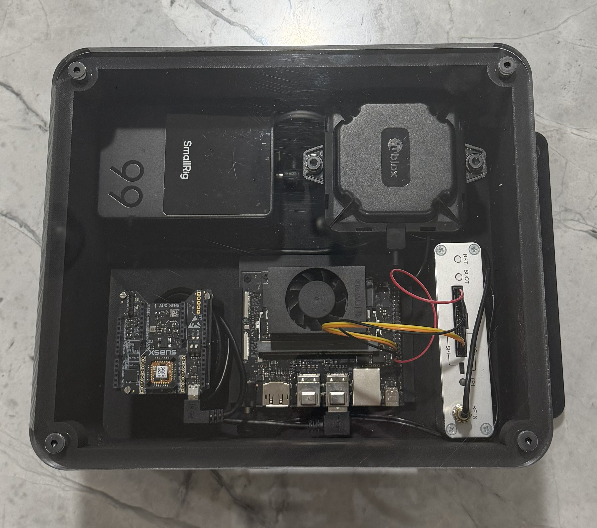
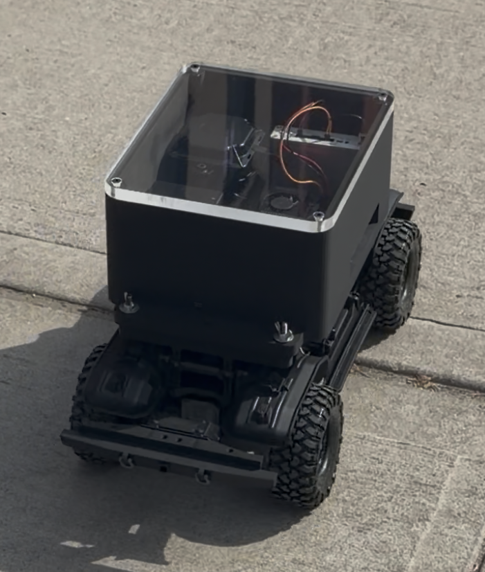
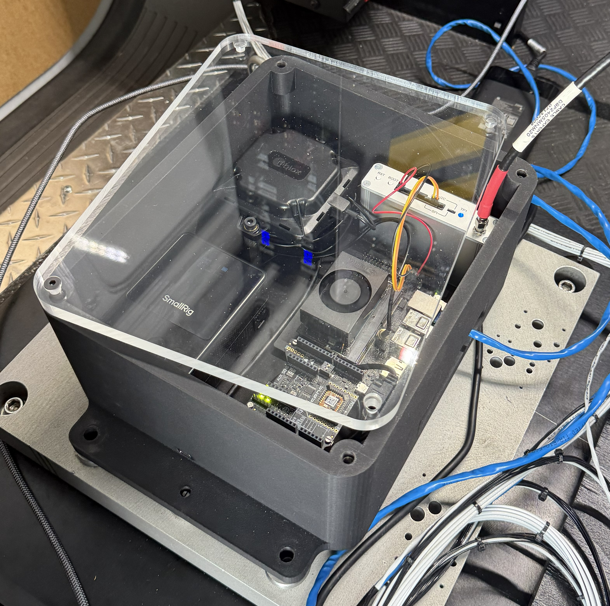

System Design
The NavFusion system collects sensor data, performs filtering and AI-based correction, and outputs position, orientation, and velocity in real time.
Collect IMU and GNSS data with timestamp synchronization for logging and fusion.
Use Kalman filtering or equivalent techniques to reduce noise and support transitions.
Apply machine learning to improve inertial estimates and reduce long-term drift.
The NavFusion architecture is divided into hardware edge integration, middleware processing, and dual AI-correction pipelines. Raw positional data is continuously ingested from the physical IMU and GNSS receivers, published to a ROS2 middleware network, and fed into MATLAB/Simulink for preliminary filtering. From there, the refined data is processed by our machine learning backend models to output a highly accurate, drift-corrected position estimate even during extended GPS outages.
Continuous sensor data ingestion from MEMS IMUs and GNSS receivers, deployed on embedded hardware for mobile ground (van) and aerial (drone) testing.
Utilizing ROS2 for real-time node communication, sensor data publishing, and logging, alongside MATLAB/Simulink for simulation and filter design.
Evaluating two concurrent drift-correction models: PSO-LSTM (Particle Swarm Optimization) and GRU-AKF (Gated Recurrent Unit with Adaptive Kalman Filtering).
The physical deployment of NavFusion relies on a robust edge-computing setup capable of real-time data ingestion and processing. Our hardware stack integrates high-precision MEMS IMUs and GNSS receivers with a central embedded compute unit to run the ROS2 middleware. Designed by our mechanical team, the alpha prototype features custom 3D-printed mounts and vibration isolation to ensure clean sensor data collection across both mobile ground (van) and aerial (drone) testing environments. This setup is optimized to hit our targets of 100 Hz sampling rates and up to 6 hours of continuous battery runtime.



Rigorous hardware testing was conducted across multiple platforms to evaluate the system's performance under dynamic conditions. Early data collection utilized an RC car to verify ROS2 node communication and 100 Hz sensor sampling rates in a controlled environment. Subsequent full-scale testing was performed using the Kearfott test van, exposing the sensor payload to real-world vibrations, varying speeds, and extended GNSS outages. These trials successfully validated our custom vibration isolation mounts, confirmed our 6-hour battery runtime goal, and provided the high-quality, synchronized datasets required to train and refine our machine learning models.


Battery Life
Data Collected
Package Cost